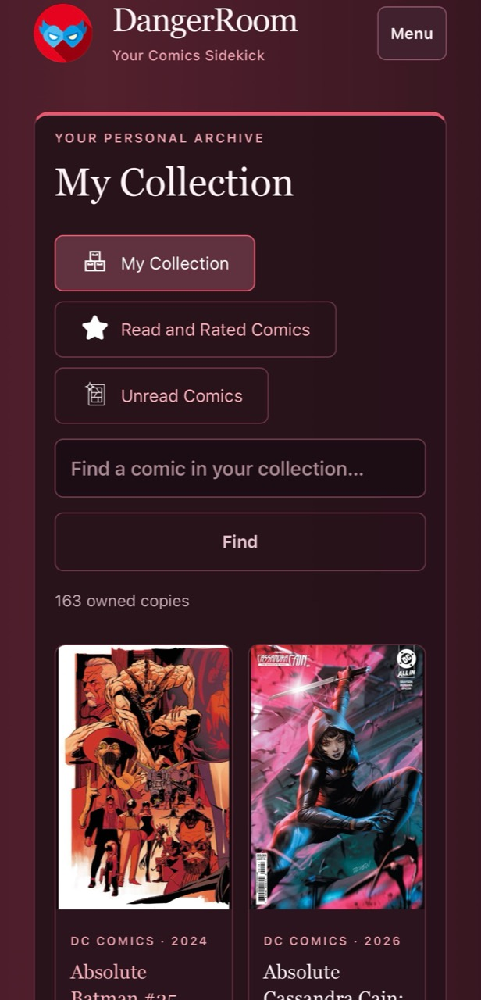
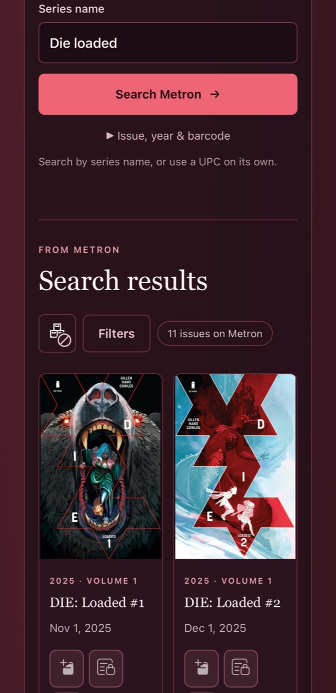
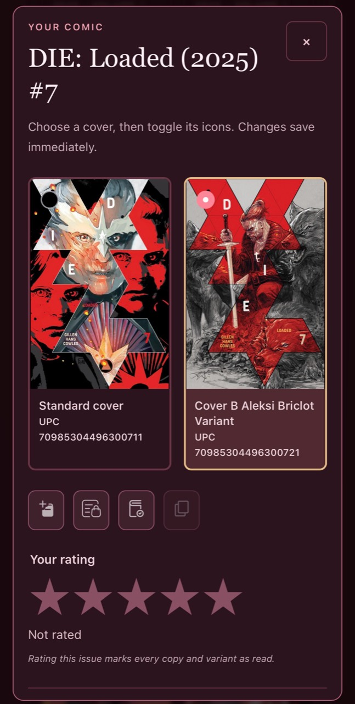
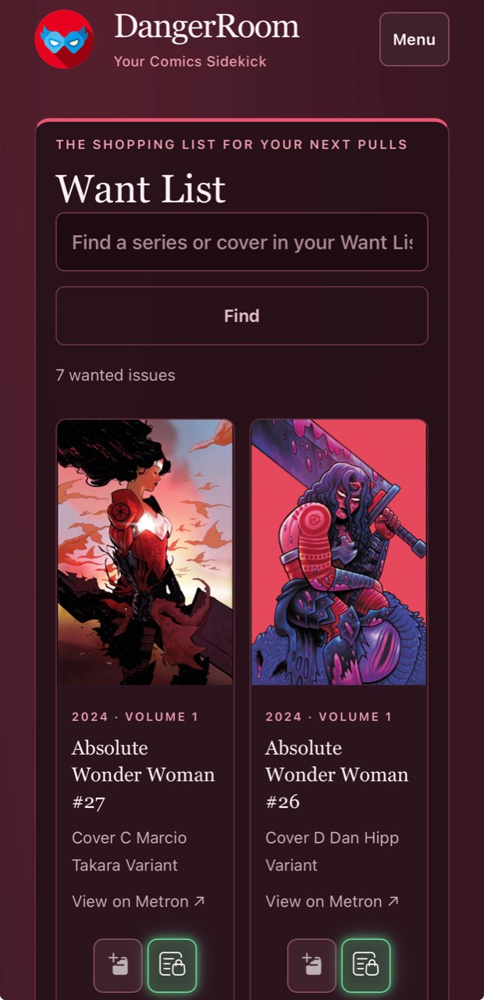
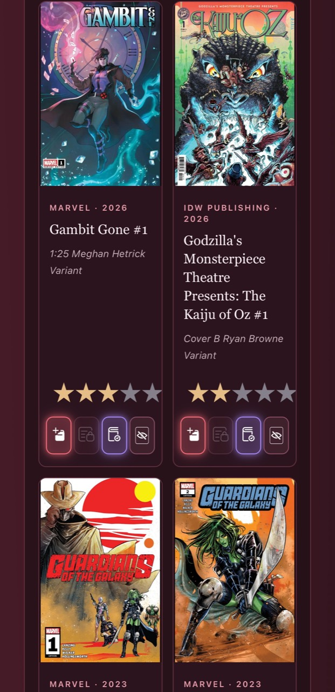
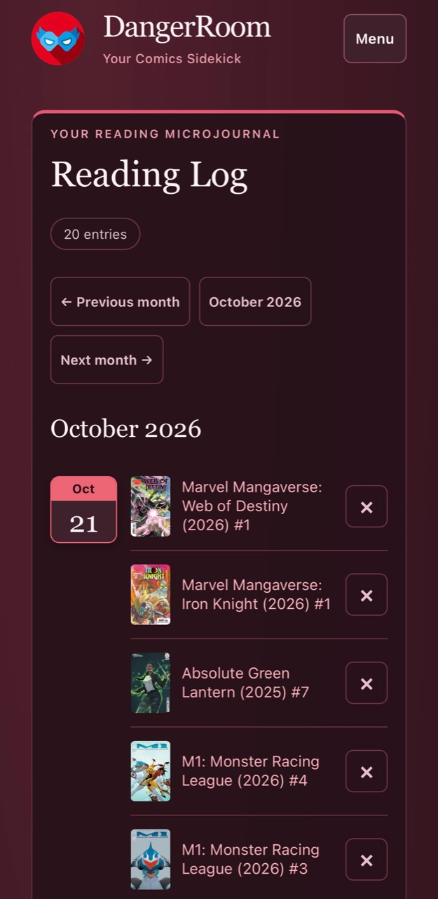
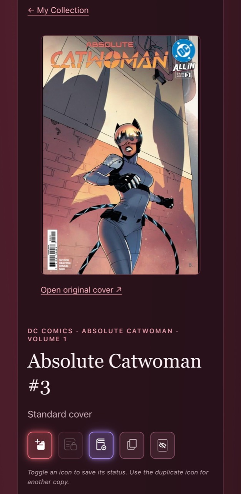
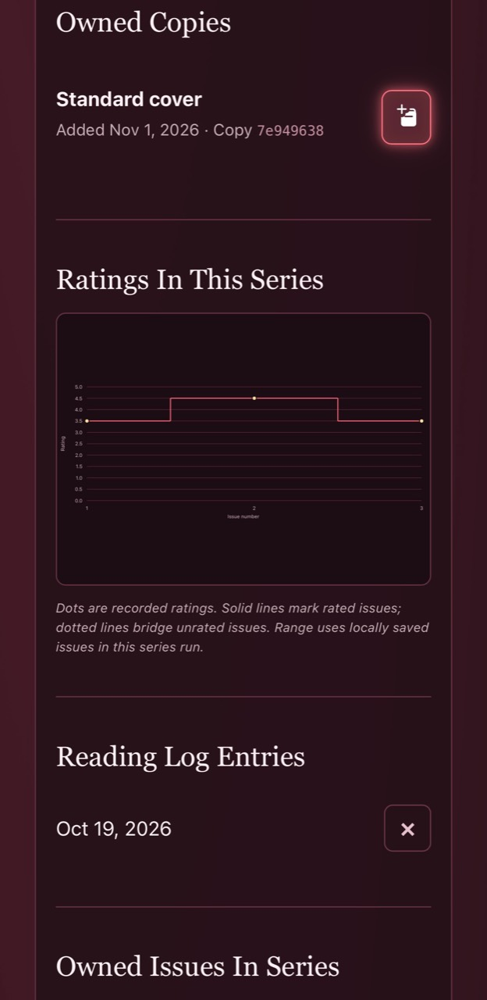
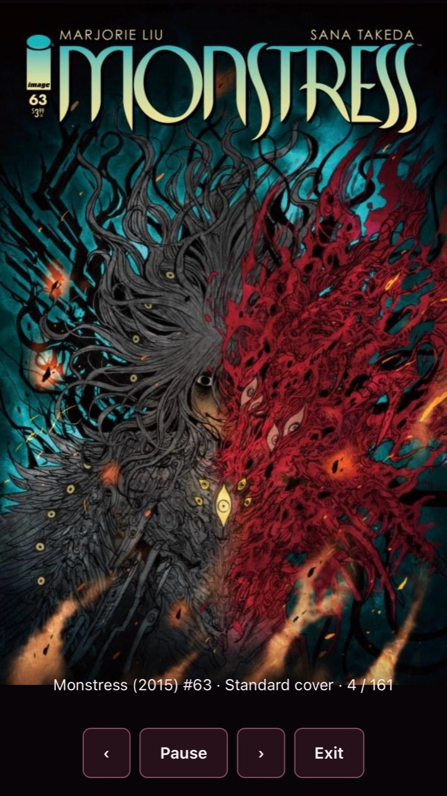

A native entry point
A native startup screen, instance settings, and Android Keystore-encrypted or iOS Keychain device credentials wrap Danger Room’s existing browser experience. Slideshow preferences are kept separately for each instance.

The Android and iOS companion for Danger Room
Connect to the Danger Room instance you already use. Use your collection, Want List, ratings, and Reading Journal from your Android phone or tablet, iPhone, or iPad.
Hard Light 1.1.0 for Android · Android 9+ · Phones & tablets · Danger Room β-030+
Hard Light 1.1.0 for iOS · Build 2
iOS 17+ · Danger Room β-030+ · GitHub and sideloading only. No App Store release.
iOS release notes · SHA-256 checksum
iOS saves credentials in the device-only Keychain. Both clients share Want List, My Collection, Search Metron, UPC Mode, Cover Slideshow, Reading Log, ratings, and the 180-day slideshow cover cache.
Full iOS guide and build instructions ↗On your device
A native startup screen, instance settings, and Android Keystore-encrypted or iOS Keychain device credentials wrap Danger Room’s existing browser experience. Slideshow preferences are kept separately for each instance.
Want List, My Collection, Search Metron, ratings, and Reading Log use the existing instance behavior in an authenticated WebView. Hard Light requires an active connection; it supports external keyboard/HID barcode scanners in UPC Mode, but does not provide offline inventory or camera recognition.
UPC lookup
Open UPC Mode directly from the menu, or tap the barcode button beside Metron search. Pair a keyboard-compatible Bluetooth HID scanner and configure STX (0x02) as its prefix and Enter as its suffix. Scan a comic, choose collection, Want List or read, confirm the cover, then scan the next one.
Full barcodes longer than 12 digits search exactly; shorter barcodes search a UPC prefix. A unique exact cover is preselected and highlighted in gold. Scanner setup tips are built in. Requires Danger Room β-030 or later.
Cover Slideshow
Downloaded slideshow covers stay fresh for six months (180 days). A 300 MB cache limit is enabled by default; adjust it in slideshow settings or turn it off to use as much storage as your device allows.
When the cache is full, uncached covers still download and display without being saved. Starting playback removes cached artwork outside the playlist. Use Flush cache in slideshow settings to clear downloaded artwork. Requires Danger Room β-030 and Hard Light 1.1.0; inventory still needs a server connection.
Install & keep up to date
https://github.com/erickolb/DangerRoom as the app source in Obtainium.net.chateaulore.hardlight. Version 1.1.0 is a normal release; prerelease updates are optional.Obtainium checks GitHub releases for updates and manages downloading them. Android may still ask you to approve installation.
sha256sum DangerRoom.apk; PowerShell: Get-FileHash .\DangerRoom.apk -Algorithm SHA256.The launcher name is Danger Room. Hard Light uses net.chateaulore.hardlight and installs separately from the older net.chateaulore.dangerroom client. Configure it again if migrating; your server collection stays the same.
After installation
comics.example.net, plus the device ID and secret. HTTPS is required; custom HTTPS ports are supported. Enter a hostname without a path or embedded credentials.Change connections under Menu → Instance and device settings. Credentials use device-only storage and are excluded from backups and transfers; reinstalling requires provisioning again. Revoke a lost device’s credential on the server.
The source includes Android build instructions and signing guidance. Debug builds use a different key and cannot update an official release installation. Android APK and iOS IPA downloads are published separately on GitHub. iOS packages are ad-hoc signed and must be re-signed by SideStore for installation.
Build and signing instructions ↗A look inside Hard Light
Browse the collection, search, and reading screens in the companion app. Tap a screenshot to view it full-size.








